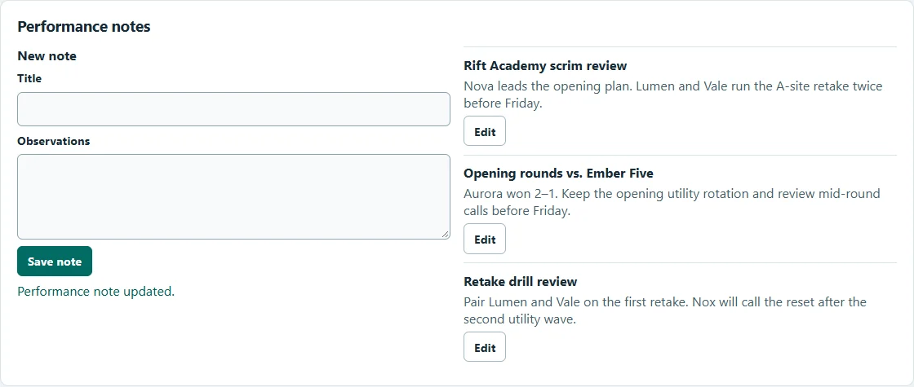
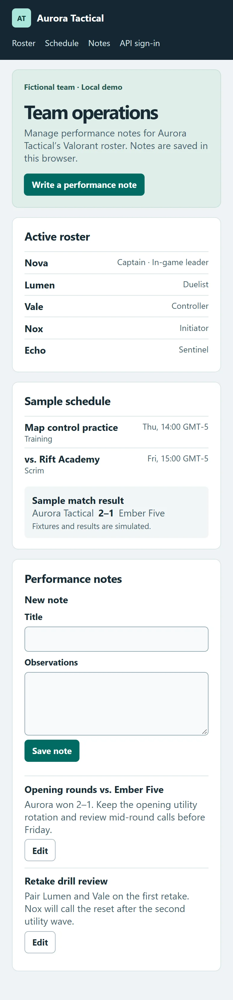

Engineering project · Runtime screenshot
Aurora Tactical
Review a fictional team workspace and create, edit and retain performance notes.
Local portfolio demo
Public source access pending.
Run the local demo
From the prepared project checkout, run these commands and open the address printed by the server. The repository may require access.
cd gaming-team-management-system/frontend
npm ci
npm run dev -- --strictPort

Problem
A team coordinator needs a focused place to review a roster and record training observations.
Architecture
React and Vite render a browser-storage demo and a separate API workspace. ASP.NET Core, EF Core and PostgreSQL provide account-scoped performance notes and session management.
Engineering decisions
- Separate fictional roster and schedule fixtures from editable notes.
- Derive the API readiness summary from the signed-in account’s notes.
Implemented workflow
- Write a performance note and save it.
- Edit the note and reload to confirm local persistence.
- Submit a blank title to inspect validation feedback.
Checks and evidence
Prepared application screenshots and the source README document this workflow. Application checks were not rerun during this portfolio update.
- Reviewed the source README and prepared screenshots in project-2026 on 25 November 2026.
Scope and next steps
- Roster membership, roles, schedules and match results are fictional fixtures.
- Actual player availability and third-party integrations are outside the implemented workflow.
- The separate API requires its documented PostgreSQL and server configuration.
Technology
React · TypeScript · ASP.NET Core · PostgreSQL
Preview availability
Screenshots show the prepared local version. Hosted demos remain pending, and source access may require permission. Local setup requirements and remaining limits are documented above.
← Return to portfolio